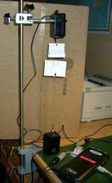
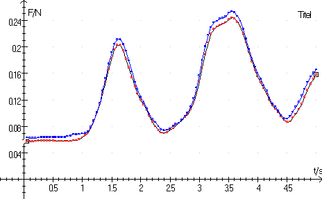

Ref. The Physics Teacher, vol. 39, okt. 2001.Newtons 3. lov kan eftervises vha. to Force-sensorer (50 N/10 N) og en LabPro (eller CBL 2), en magnet og to clips. Et foto af opstillingen ses til højre. Øverste Force-sensor er fastgjort til et stativ med krogen nedad. En flad magnet er skjult i det foldede papstykke. Nederste Force-sensor står på bordet med krogen opad. To clips er sat fast på et stykke pap og trækkes opad af magneten, men holdes med en snor fast af den nederste Force-sensor.
Force-sensorerne indstilles til mindste skalaområde, 10 N og kalibreres omhyggeligt hver for sig. Standardkalibreringen slope –4,90 N/volt og intercept 12,25 Newton er ikke nok og det anbefales, at kalibrere Force-sensorerne i de viste retninger. Kalibreringen kan foretages fra Datalyse i menupunktet »Mål (t, f(t))«. Gem herefter de to kalibreringer i ini-filen: »vernier.ini«.
Læg en bog under nederste Force-sensor, så snoren er slap. Foretag en måling på begge sensorer i menupunktet »Scan på flere kanaler«. Fortolk målingerne.
Fjern bogen, så snoren er spændt. Vælg »Scan på flere kanaler« og bevæg langsomt nederste Force-sensor op og ned. Clipsene må ikke røre magneten. Tegn (t, F1 og F2)-graf for de magnetiske kræfter og fortolk graferne.
